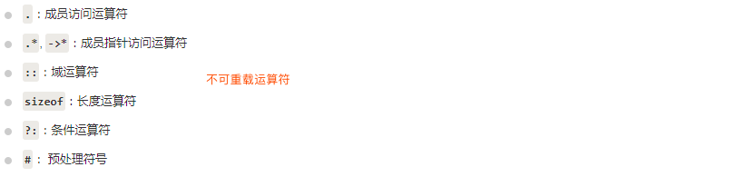

c++简明教程
基本知识¶
#include的<>和" "
<>先去系统目录中找头文件，如果没有再到当前目录下找。- 而
" "首先在当前目录下寻找，如果找不到，再到系统目录中寻找。
命名空间
主要是用来区分不同库中相同名称的函数、类、变量等。**使用了命名空间即定义了上下文。**本质上，命名空间就是定义了一个范围。
#include <iostream>
using namespace std;
// 第一个命名空间
namespace first_space{
void func(){
cout << "Inside first_space" << endl;
}
}
// 第二个命名空间
namespace second_space{
void func(){
cout << "Inside second_space" << endl;
}
}
int main ()
{
// 调用第一个命名空间中的函数
first_space::func();
// 调用第二个命名空间中的函数
second_space::func();
return 0;
}
// 嵌套的命名空间
namespace namespace_name1 {
// 代码声明
namespace namespace_name2 {
// 代码声明
}
}
// 访问 namespace_name2 中的成员
using namespace namespace_name1::namespace_name2;
// 访问 namespace:name1 中的成员
using namespace namespace_name1;
常用基础知识
// 1.typedef 声明,使用 typedef 为一个已有的类型取一个新的名字
typedef int feet; feet distance=3;
// 2.常量 const
const 数据类型 常量名=常量值； 数据类型 const 常量名=常量值； // 两种定义，声明时必须赋值，声明后只读。
// 3.数据转换
// 3.1 隐含转换从低到高 int a=3; float b = a;
char-->short-->int-->unsigned-->long-->unsigned long-->float-->double
// 3.2 显示转换 类型说明符(表达式)。 float z=7.56; int a = int(z);
// 3.3 4种类型转换操作符；细分4种
static_cast<类型说明符>（表达式）// 基本数据类型间的转换都适用：int(z) <==> static_cast<int>(z)
const_cast<类型说明符>（表达式）
reinterpret_cast<类型说明符>（表达式）
dynamic_cast<类型说明符>（表达式）
// 4.变量的存储类型，变量出了数据类型(int/float/double..)外还有存储类型，决定了其存储方式
auto // 暂时性存储，其存储空间可以被若干变量多次覆盖使用。采用堆栈方式分配内存空间
register // 存放在通用寄存器中
extern // 在所有函数和程序段中都可以引用
static // 在内存中以固定地址存放，整个程序运行期间都有效
// 5.枚举类型enum
enum 枚举类型名 {变量值列表}; // 枚举声明形式
enum Weekday {SUM,MON,TUE,WED,THU,FRI,SAT}; // 举例子，枚举元素具有默认值:0,1,2,3...
// 注意枚举类型是常量不能赋值，SUN=0;//非法 ，使用的时候直接当成常量使用即可：SUN拿来就用，已经定义过了
enum Weekday {SUN=7,MON=1,TUE,WED,THU,FRI,SAT};// SUN为7，MON为1，以后顺出加1，SAT为6
int count=SUN;// 隐含类型转换
Weekday day = Weekday(2); // 显示类型转换
// 6.函数参数传递
// 6.1 值传递:单向传递过程，一旦形参获得值便与实参脱离关系，伺候无论形参发生了怎样的改变，都不会影响到实参
// 6.2 引用传递:形参相当于实参的别名，一旦形参发生变化，实参也会改变，void swap(int &a,int &b){xxx}
// 6.3 数组名作为函数参数
void rowSum(int a[][2],int nRow){xxx} int table[3][2]={{1,2},{3,4},{1,4}}; rowSum(a,3);
// 7.函数重载:具有相同函数名，但是形参个数或形参类型必须至少一个不同，返回值类型也可不同。但编译器不以返回值来区分函数。
// 8.c++系统函数 #include<cmath> sqrt/abs/min/max/sin/cos/tan/....
// 9.结构体 和 c++类唯一区别，类默认成员为private，结构体默认成员 public，因为这个主要是与c兼容
// 9.1 定义
struct 结构体名{
公有成员
protected:
保护型成员
private:
私有成员
}；
// 9.2 声明一个结构体类型。
struct Student{
int num;
string name;
char sex;
int age;
};
Student stu = {97001,"chenyuyang",'F',19}
//9. 联合体，一组数据中任何两个数据不会同时有效,例如一门课程通过或者不通过
union 联合体名称{
公有成员 // 默认访问权限
protected:
保护型成员
private:
私有成员
}
// 举例子
union Mark{
char grade; // 等级制的成绩
bool pass; // 只记是否通过的成绩
int percent; // 百分制的成绩
}
// 10.预处理命令
// 10.1宏定义define，宏名一般大写
// 10.1.1 不带参数的宏定义
#define LENGTH 10
#define M y*y+3*y // M代替y*y+3*y使用
// 10.1.2 带参数宏
#define M(y) y*y+3*y // k = M(5);
#define MAX(a,b) (a>b):a:b
// 10.1.3 取消宏
#undef LENGTH // 取消宏，后续该宏不可用
// 10.2 条件编译:用来有选择地对部分程序源代码进行编译
// 10.2.1 #ifdef 如果标识符被#define命令定义过，则对1进行编译，否则对2进行编译
#ifdef 标识符
程序段1
#else
程序段2
#endif
// 10.2.2 #ifndef，如果标识符未被#define命令定义过，则对1进行编译，否则对2进行编译，和10.2.1相反
#ifndef 标识符
程序段1
#else
程序段2
#endif
// 10.2.3 # if
#if 常量表达式 // 常量表达式:结果是0/非0
程序段1
#else
程序段2
#endif
// 10.3 #error命令，用于调试，在编译中遇到#error指令就停止编译
#error 出错信息// 出错信息:"XXX has been defined"
// 11. 基本输入输出
#include<iostream>
cout << "string： " << name << endl;// 流插入运算符 << 在一个语句中可以多次使用
cin >> name >> age;// 流提取运算符 >> 在一个语句中可以多次使用，如果要求输入多个数据
cerr << "Error message : " << str << endl;//标准错误流: cerr 对象是非缓冲的，且每个流插入到 cerr 都会立即输出
clog << "Error message : " << str << endl;// 标准日志流:clog 对象是缓冲的。这意味着每个流插入到 clog 都会先存储在缓冲在，直到缓冲填满或者缓冲区刷新时才会输出。
//编写和执行大型程序时，使用 cerr 流来显示错误消息，而其他的日志消息则使用 clog 流来输出。
// 12 new/delete 和 new Type[]/delete[] obj;
// 12.1 定义
void *operator new(size_t); //allocate an object
void *operator delete(void *); //free an object
void *operator new[](size_t); //allocate an array
void *operator delete[](void *); //free an array
// 12.2 语法
// 12.2.1 变量申请
Type* pointer = new Type;
....
delete pointer;
// 12.2.2 数据申请
Type* pointer new Type[N];
...// pointer是指针，pointer指向的第一个元素可以用pointer[0]/*pointer,第二个元素pointer[1]/*(pointer+1)
delete[] pointer;
// 13.指针:指针是变量，内容是内存的地址编号
int *p = NULL;int a=1; int *p=&a;// 定义
*p // 使用:该地址所存储内容,这时其实就是a
int i=30; int *p=&i;int **pp=π// pp是二级指针
int b=40; *pp = &b;// 改变一级指针的的指向
// 13.1 指针和数组:指针是指针变量，数组是指针常量
int *p,a[]={1,2,4}; p = a;// 可以直接赋值
p[i]==a[i]; *(p+i)==*(a+i)
// 13.2 const修饰
// 13.2.1 const修饰指针，const修饰的是p，p为常量，但*p可以赋值
int a=2;int *const p=&a; int b=4; p=&b;// 指针常量无法修改
// 13.2.2 const修饰指向，const修饰的是*p,即*p为常量，但p是普通变量，随意赋值
int a=2;const int *p=&a; int b=4; p=&b; *p=200;// 编译通不过
// 13.3 函数指针变量
void print(){xxx}; void (*pf)() = print; pf()==print()==(*pf)();
// 13.4 函数名做参数
void xxx(int a,int b,int(*p)(int,int)){xxx}
int haha(int a,int b){return a+b;}
xxx(10,3,haha);
// 14. 浅
异常处理
- throw: 当问题出现时，程序会抛出一个异常。这是通过使用 throw 关键字来完成的。
- catch: 在想要处理问题的地方，通过异常处理程序捕获异常。catch 关键字用于捕获异常。
- try: try 块中放置可能抛出异常的代码，try 块中的代码被称为保护代码。它后面通常跟着一个或多个 catch 块。
- 抛出异常，可以使用 throw 语句在代码块中的任何地方抛出异常。throw 语句的操作数可以是任意的表达式，表达式的结果的类型决定了抛出的异常的类型。
// 捕获异常
try
{
// 保护代码
}catch( ExceptionName e1 )
{
// 能处理任何异常的代码
}catch( ExceptionName e2 )
{
// 能处理任何异常的代码
}catch( ExceptionName eN )
{
// 能处理任何异常的代码
}
// 直接抛出异常
double division(int a, int b)
{
if( b == 0 )
{
throw "Division by zero condition!";
}
return (a/b);
}
// 人为定义新的异常
#include <iostream>
#include <exception>
using namespace std;
struct MyException : public exception
{
const char * what () const throw ()
{
return "C++ Exception";
}
};
int main()
{
try
{
throw MyException();
}
catch(MyException& e)
{
std::cout << "MyException caught" << std::endl;
std::cout << e.what() << std::endl;
}
catch(std::exception& e)
{
//其他的错误
}
}
类和对象¶
// 类的定义
class Box
{
public: // 公有成员在程序中类的外部是可访问的
// 构造函数:会在每次创建类的新对象时执行,无返回值，名字和类名一样
Box();//无参构造函数声明,不写构造函数时，自动创建
Box(double len);// 有参构造函数声明，写了后，不会再自动创建无参构造函数
// 拷贝构造函数:形参是本类对象的引用，可加const。作用:一个已存在的对象初始化同类的一个新对象
// 如果没有类内声明，系统会自动生成一个隐含的复制构造函数:把初始值对象的每个数据成员的值都复制到新建立的对象中去
// 什么时候会使用？
// 1. 类的一个对象初始化另一个对象时:Box a(10); Box b(a); Box c=a;//两种用法
// 2.函数的形参是类的对象，调用函数‘值’传递时; void f(Box b){} Box c(10); f(c);
// 3.函数返回值是类对象时:因为该类对象离开函数就会消亡，所以必须复制构造函数才能返回
Box(const Box &obj);// 声明拷贝构造函数
// 析构函数:会在每次删除所创建的对象时执行,同类名,无返回值,不接收任何参数，但可以是虚函数
~Box();// 析构函数的声明
// 成员变量，普通函数/内联函数/常成员函数
double length;double breadth;double height; // 盒子的长宽高
double getVolume(void);//普通函数声明，如果直接在类内定义实现，那么称为内联函数，inline可省略
double getVolume(int a);// 重载函数，同名，依据参数类型不同判断，不能仅通过返回类型判断
double get_length(){return length;}// 内联函数/也可以类内声明在类外前面加inline可以定义
// 如果一个对象被定义为常对象，那么它只能调用常成员函数，const关键字可以用于重载还是函数的区分
void print_length() const;
// 友元函数:1.不是成员函数 2.必须定义在类外部，但有权访问类的所有 私有+保护成员
// 友元函数没有 this 指针，因为友元不是类的成员。只有成员函数才有 this 指针
friend void printWidth(Box box);// 声明友元函数
// this指针:this 指针是所有成员函数的隐含参数。因此，在成员函数内部，它可以用来指向调用对象。
double thisGetVolume(void){return this->getVolume();}
// 静态成员:在类的所有对象中是共享的,意味着无论创建多少个类的对象，静态成员都只有一个副本
static int objectCount;
// 如果把函数成员声明为静态的，就可以把函数与类的任何特定对象独立开来。静态成员函数即使在类对象不存在的情况下也能被调用，静态函数只要使用类名加范围解析运算符::就可以访问
// 静态成员函数没有this指针，并且只能访问静态成员(静态成员变量+静态成员函数)
static int getObjectCount();
// 重载运算符:函数名是由关键字 operator 和其后要重载的运算符符号构成的。与其他函数一样，重载运算符有一个返回类型和一个参数列表，可重载运算符见下图，下面是 重载 + 运算符，用于把两个 Box 对象相加
Box operator+(const Box& b)
{
Box box;
box.length = this->length + b.length;
box.breadth = this->breadth + b.breadth;
box.height = this->height + b.height;
return box;
}
private://私有成员变量或函数在类的外部是不可访问的，甚至是不可查看的。只有类和友元函数可以访问私有成员。如果没有使用任何访问修饰符，类的成员默认为私有成员
const int const_a; // 常数据成员，只能通过初始化列表来获得初值
double width;
double lenght;
int *ptr;
protected:// 保护成员类似私有成员，但保护成员在派生类（即子类）中是可访问的。
};
//一般都是类内声明函数，类的外部使用范围解析运算符 :: 定义该函数
// 定义构造函数
Box::Box(void){...}
Box::Box(double len){...}
Box::Box(int i):const_a(i){...} // 常数据成员，只能通过初始化列表来获得初值
// 定义拷贝构造函数
Box::Box(const Box &obj){ptr=new int;*ptr=*obj.ptr;// 拷贝值}
// 定义析构函数
Box::~Line(void){...}
// 定义带返回值的成员函数---》返回值类型 类名::函数成员名(参数表){函数体}
double Box::getVolume(void){...}
double Box::getVolume(void){...}
// 定义常成员函数,调用 const Box b(10); b.print_length();
void Box::print_length(){cout<<length<<endl;}
// 友元函数定义,虽然声明在类内部，但并不是类成员函数，是独立存在的，所以不需要使用解析运算符::
void printWidth(Box box){cout<<box.width<<endl;}// 注意，这里访问了类的私有变量:width
// 初始化类 Box 的静态成员
int Box::objectCount = 1;
// 类的声明
Box box1;
Box box2 = Box(parameters);
Box box3(parameters);
Box* box4 = new Box(parameters);
//访问类的成员
box1.length = 5.0;
cout << box1.length << endl;

前向引用申明
class A{
public:
void f(B b);
}
class B{
public:
void g(A a);
}
// 懵逼了吧，此时咋调用？
class B;// 前向引用声明即可
class A{
public:
void f(B b);
}
class B{
public:
void g(A a);
}
多文件结构
// point.h
class Point{
public:
Point();
Point(int x=0,int y=0):x(x),y(y){}
Point(const Point &p);
~Point(){count--;}
int getX() const{return x;}
int getY() const{return y;}
static void showCount();
private:
int x,y;
static int count;
};
// Point.cpp
#include "point.h"
#include <iostream>
using namespace std;
int Point::count = 0; //使用类名初始化静态数据成员
Point::Point(const Point &p):x(p.x),y(p.y){
count++;
}
void Point::showCount() {
cout<<"Object count="<<count<<endl;
}
// main.cpp
#include "point.h"
#include <iostream>
using namespace std;
int main(){
Point a(4,5);
cout<<"Point A:"<<a.getX()<<","<<a.getY();
Point::showCount();
Point b(a);
cout<<"Point B:"<<b.getX()<<","<<b.getY();
Point::showCount();
return 0;
}
继承
class 派生类名:继承方式 基类名1，继承方式 基类名2...{}
// 基类 Shape
class Shape
{
public:
void setWidth(int w){width = w;}
void setHeight(int h){height = h;}
protected:
int width;
int height;
};
// 基类 PaintCost
class PaintCost
{
public:
int getCost(int area){return area * 70;}
};
// 派生类
class Rectangle: public Shape, public PaintCost
{
public:
int getArea(){return (width * height);}
};
注意事项
// 1. 如果派生类声明了一个和某基类成员同名的新成员(参数表也相同，否则为重载)，派生类新成员隐藏了外层同名成员
// 2. 派生类可以访问基类中所有的非私有成员，同时，一个派生类继承了所有的基类方法，但下列情况除外：
// 2.1.基类的构造函数、析构函数和拷贝构造函数。
// 2.2.基类的重载运算符。
// 2.3.基类的友元函数
// 3.访问控制
// 3.1 public，公有继承:基类的public能直接访问，protected修饰的类内能访问类外对象不能访问，但private修饰的不可直接访问
// 3.2 private,私有继承：基类的public和protected修饰的以私有成员身份出现在派生类中，private修饰的不可直接访问
// 3.3 protected，保护继承：基类的public和protected修饰的以保护成员身份出现在派生类中但是类外派生类对象无法直接访问他们，private修饰的不可直接访问
// 4.派生类的构造函数和析构函数 必须对基类的构造函数和析构函数进行初始化，因为构造函数和析构函数并没有被继承
// 4.1 构造函数,对于使用默认构造函数的基类，可以不给出类名，对于成员对象也类似
派生类名::派生类名(参数表):基类名1(基类1初始化参数表),...,基类名n(基类n初始化参数表),成员对象名1(成员对象1初始化参数表),...,成员对象名m(成员对象m初始化参数表){xxx}
class Base1{
public:
Base1(int i){cout<<"Constrtucting Base1"<<i<<endl;}
};
class Base2{
public:
Base2(int j){cout<<"Constrtucting Base2"<<j<<endl;}
};
class Base3{
public:
Base3(){cout<<"Constrtucting Base3*"<<endl;}
};
// 基类构造函数的‘调用’顺序是按照派生类定义时的顺序，因此应该是先Base2，再Base1,最后Base3
class Derived:public Base2,public Base1,public Base3{ // 注意基类名的顺序，依次为基准
public:
// 注意基类名的个数和顺序，注意成员对象名的个数和顺序，这里Base3是默认构造函数，无需传参，定义顺序随意
Derived(int a,int b,int c,int d):Base1(a),member2(d),member1(c),Base2(b){}
private:
Base1 member1;
Base2 member2;
Base3 member3;
}
// 4.2复制构造函数
Derived::Derived(const Derived &v):Base(v)(...)// 可以用派生类的对象去初始化基类的引用
// 4.3析构函数，无参数所以无需写，只不过释放顺序刚好和构造函数顺序相反
// 5.多继承重名问题，虚基类解决：Base基类，Base1和Base2继承自Base类，Base3继承自Base1和Base2,那么Base1和Base2中会有很多同名函数，那Base3中怎么访问？方法一:每个方法名可以用作用域区分(Base1::fun/Base2::fun)。方法二：把Base类设置为虚基类，此时Base1/Base2中所有同名函数只有一个映射
// 5.1虚基类声明
class 派生类名:virtual 继承方式 基类名{xxx} // Base3访问的同名函数是直接访问Base类函数/数据成员
// 5.2 虚基类的构造函数
class Base0{
public:
Base0(int var):var0(var){}
int var0;
}
class Base1:virtual public Base0{
public:
Base1(int var):Base0(var){}
int var1;
}
class Base2:virtual public Base0{
public:
Base2(int var):Base0(var){}
int var2;
}
class Derived:public Base1,public Base2{
public:
Derived(int var):Base0(var),Base1(var),Base2(var){} // 虚基类三次初始化？完全可以这样写
}
多态
虚函数**是在**基类**中使用关键字 **virtual 声明的函数。在派生类中重新定义基类中**定义的虚函数时，会告诉编译器不要静态链接到该函数。我们想要的是**在程序中任意点可以根据所调用的对象类型来选择调用的函数，这种操作被称为**动态链接**，或后期绑定。 若在基类中不能对虚函数给出有意义的实现，这个时候就会用到纯虚函数，在函数参数后直接加 = 0 告诉编译器，函数没有主体，这种虚函数即是纯虚函数。
class Shape {
protected:
int width, height;
public:
// 构造函数
Shape( int a=0, int b=0)
{
width = a;
height = b;
}
// 虚函数
virtual int area()
{
cout << "Parent class area :" <<endl;
return 0;
}
// 纯虚函数，如果类中至少有一个函数被声明为纯虚函数，则这个类就是抽象类。
// 设计抽象类（通常称为 ABC）的目的，是为了给其他类提供一个可以继承的适当的基类。抽象类不能被用于实例化对象，它只能作为接口使用。因此，如果一个 ABC 的子类需要被实例化，则必须实现每个虚函数，如果没有在派生类中重载纯虚函数，就尝试实例化该类的对象，会导致编译错误。可用于实例化对象的类被称为具体类。
virtual int area() = 0;
};
// 继承
class Rectangle: public Shape{
public:
// 派生类的构造函数实现时，因为基类写了需要传参的构造函数，所以在构造时直接传入基类需的参数
Rectangle( int a=0, int b=0):Shape(a, b) { }
// 实现基类的虚函数，这样就实现了多态:意味着调用成员函数时会根据调用函数的对象的类型来执行不同的函数
int area (){
cout << "Rectangle class area :" <<endl;
return (width * height);
}
};
class Triangle: public Shape{
public:
Triangle( int a=0, int b=0):Shape(a, b) { }
int area (){
cout << "Triangle class area :" <<endl;
return (width * height / 2);
}
};
// 程序的主函数
int main( )
{
Shape *shape;
Rectangle rec(10,7);
Triangle tri(10,5);
// 存储矩形的地址
shape = &rec;
// 调用矩形的求面积函数 area
shape->area(); //Rectangle class area
// 存储三角形的地址
shape = &tri;
// 调用三角形的求面积函数 area
shape->area(); //Triangle class area
return 0;
}
模板¶
模板是泛型编程的基础，泛型编程即以一种独立于任何特定类型的方式编写代码
// 一般格式
template <class type> // template <typename T>
return-type func-name(parameter list)
{
// 函数的主体
}
// 举例说明
#include <iostream>
#include <string>
using namespace std;
//使用const&可节省传递时间，同时保证值不被改变
template <typename T>
inline T const& Max (T const& a, T const& b)
{
return a < b ? b:a;
}
int main ()
{
int i = 39;
int j = 20;
cout << "Max(i, j): " << Max(i, j) << endl;
double f1 = 13.5;
double f2 = 20.7;
cout << "Max(f1, f2): " << Max(f1, f2) << endl;
string s1 = "Hello";
string s2 = "World";
cout << "Max(s1, s2): " << Max(s1, s2) << endl;
return 0;
}
// 类模板
template <class type>
class class-name {
//类的主体
}
// 举例子
#include <iostream>
#include <vector>
#include <cstdlib>
#include <string>
#include <stdexcept>
using namespace std;
template <class T>
class Stack {
private:
vector<T> elems; // 元素
public:
void push(T const&); // 入栈
void pop(); // 出栈
T top() const; // 返回栈顶元素
bool empty() const{ // 如果为空则返回真。
return elems.empty();
}
};
template <class T>
void Stack<T>::push (T const& elem)
{
// 追加传入元素的副本
elems.push_back(elem);
}
template <class T>
void Stack<T>::pop ()
{
if (elems.empty()) {
throw out_of_range("Stack<>::pop(): empty stack");
}
// 删除最后一个元素
elems.pop_back();
}
template <class T>
T Stack<T>::top () const
{
if (elems.empty()) {
throw out_of_range("Stack<>::top(): empty stack");
}
// 返回最后一个元素的副本
return elems.back();
}
int main()
{
try {
Stack<int> intStack; // int 类型的栈
Stack<string> stringStack; // string 类型的栈
// 操作 int 类型的栈
intStack.push(7);
cout << intStack.top() <<endl;
// 操作 string 类型的栈
stringStack.push("hello");
cout << stringStack.top() << std::endl;
stringStack.pop();
stringStack.pop();
}
catch (exception const& ex) {
cerr << "Exception: " << ex.what() <<endl;
return -1;
}
}
STL标准模板库¶
STL中包括六大组件：容器、迭代器、算法、仿函数、迭代适配器、空间配置器。
- STL中的常用容器包括：序列式容器（vector、deque、list）
- 关联式容器（map、set）
- 容器适配器（queue、stack）。
STL库常用函数
// 0.一种循环的简单用法c++11
vector<int> a={2,3,4,5};
for(auto i:a) cout<<i<<" ";
// 0.1 for_each()：Function for_each(InputIterator beg, InputIterator end, Function f)
// for_each() 可以理解为python的map操作，更加复杂的可以使用transform函数
// 1.abs的区别
abs(); // 主要是对int求绝对值,包含在<stdlib.h>
fabs(); // 对float，double求绝对值 包含在<cmath>
// 1.1 sort排序 #include<algorithm>
void sort (RandomAccessIterator first, RandomAccessIterator last, Compare comp)
* first：是要排序的数组的起始地址
* last：是结束的地址（最后一个数据的后一个数据的地址）
* comp是排序的方法：可以是从升序也可是降序。如果第三个参数不写，则默认的排序方法是从小到大排序。
sort(s.begin(),s.end());// 升序排列
sort(a,a+10);// 数组排序
sort(s.begin(),s.end(),[](int a,int b)->bool {return a > b;});// 降序
// 1.2 max_element() 与 min_element()：#include<algorithm>，返回区间 [first,last)中第一个最大值和第一个最小值对应的迭代器。（可以理解为找最大值或最小值的索引）
ForwardIt min_element(ForwardIt first, ForwardIt last[,cmp]);//指向范围 [first, last) 中最大元素的迭代器。若范围中有多个元素等价于最大元素，则返回指向首个这种元素的迭代器。若范围为空则返回 last
ForwardIt max_element(ForwardIt first, ForwardIt last[,cmp]);
// 举例子，数组
cout<<max_element(a, a+6) - a<<endl;// 输出最大值索引
cout<<*max_element(a, a+6)<<endl;//输出最大值
// 举例子，vector
cout<<max_element(s.begin(), s.end()) - s.begin()<<endl;// 输出最大值索引
cout<<*max_element(s.begin(), s.end())<<endl;//输出最大值
// 1.3 accumulate #include<numeric>：作用有两个，一个是累加求和，另一个是自定义类型数据的处理
int sum = accumulate(vec.begin() , vec.end() , 0);// 第三个形参则是累加的初值
string sum = accumulate(v.begin() , v.end() , string(" "));//从空字符串开始，把vec里的每个元素连接成一个字符串
// 2.distance的作用
#include<iterator>
distance(InputIterator first,InputIterator last);// 该函数用于计算两个迭代器表示的范围内包含元素的个数:[first,last),举例:std::distance(v.begin(),v.end())
// 3.unique：删除相邻的重复元素，所以一般是排序后使用
iterator unique(iterator it_1,iterator it_2);// 对[it_1,it_2)范围内的元素进行去重，返回值是一个迭代器:去重后容器中不重复序列的最后一个元素的下一个元素。注:单纯的使用unique函数的话，容器的长度并没有发生变化，只是元素的位置发生了变化
vector<int> data = {1,3,3,4,5,6,6,7};
unique(data.begin(),data.end());// {1 3 4 5 6 7 6 7 },不重复的元素都移到了前面，后面元素没改变，惊讶！！！
// 如果想删除元素，不保留后面元素如何做？
new_end = unique(data.begin(),data.end());// 注意返回值，上面有解释
data.erase(new_end,data.end());// 删除后面的元素即可
//4.transform,op：就是函数名，这个函数类似于python的map操作,为保证元素个数相等，fir.resize(res.size)
// 当然，如果是简单的操作可以使用 for_each代替
#include <algorithm>
// 一元操作：将op应用于[first1, last1)范围内的每个元素，并将每个操作返回的值存储在以result开头的范围内，当然，这个result可以是first.begin(),即执行replace操作
template <class InputIterator, class OutputIterator, class UnaryOperation>
OutputIterator transform (InputIterator first1, InputIterator last1,
OutputIterator result, UnaryOperation op);
// 二元操作:使用[first1, last1)范围内的每个元素作为第一个参数调用binary_op,并以first2开头的范围内的每个元素（元素个数必须和1相同）作为第二个参数调用binary_op,每次调用返回的值都存储在以result开头的范围内。
template <class InputIterator1, class InputIterator2,
class OutputIterator, class BinaryOperation>
OutputIterator transform (InputIterator1 first1, InputIterator1 last1,
InputIterator2 first2, OutputIterator result,
BinaryOperation binary_op);
// 6.二分查找 Binary_search/lower_bound/upper_bound:该函数仅适用于“已排好序”的序列：并不是严格的降序活升序，只要满足“所有令 element<val（或者 comp(val, element）成立的元素都位于不成立元素的前面（其中 element 为指定范围内的元素）”即可。
// 6.1 Binary search：用于在指定区域内查找是否包含目标值。
#include<algorithm>
//查找 [first, last) 区域内是否包含 val
bool binary_search (ForwardIterator first, ForwardIterator last,const T& val);
//根据 comp 指定的规则，查找 [first, last) 区域内是否包含 val,comp:此参数可接收一个包含 2 个形参（第一个形参值为 val）且返回值为 bool 类型的函数，可以是普通函数，也可以是函数对象。
bool binary_search (ForwardIterator first, ForwardIterator last,const T& val, Compare comp);
// 6.2 lower_bound():用于在指定区域内查找大于等于目标值的第一个元素。当查找成功时，迭代器指向找到的元素；反之，如果查找失败，迭代器的指向和 last 迭代器相同。
#include<algorithm>
//在 [first, last) 区域内查找不小于 val 的元素
ForwardIterator lower_bound (ForwardIterator first, ForwardIterator last,const T& val);
//在 [first, last) 区域内查找第一个不符合 comp 规则的元素，comp:此参数可接收一个包含 2 个形参（第一个形参值始终为 val）且返回值为 bool 类型的函数，可以是普通函数，也可以是函数对象。
ForwardIterator lower_bound (ForwardIterator first, ForwardIterator last,const T& val, Compare comp);
// 6.3 upper_bound：在指定范围内查找大于目标值的第一个元素
#include<algorithm>
//查找[first, last)区域中第一个大于 val 的元素。
ForwardIterator upper_bound (ForwardIterator first, ForwardIterator last,const T& val);
//查找[first, last)区域中第一个不符合 comp 规则的元素，comp:此参数可接收一个包含 2 个形参（第一个形参值为 val）且返回值为 bool 类型的函数，可以是普通函数，也可以是函数对象。
ForwardIterator upper_bound (ForwardIterator first, ForwardIterator last,const T& val, Compare comp);
string非常全的总结
// #include<string>，常用函数
// 1.1 初始化
string s1;// 空字符串
string s2(10,'$');// 10个$
string s3("hello world");
string s4(s3);
string s5 = "Hahaha";
s5.clear();// 清空
// string--to--char*
const char* charstring = s5.c_str();// 使用c_str()进行类型转换时，const关键字是必须的
// 字符串比较
if(0==s5.compare("Hahaha")) {...}
// 1.2 常用简单方法
int s5.size();//当前字符串的大小
int s5.length();// 当前字符串的长度
bool s5.empty();// 判断当前字符串是否为空
void s5.resize(int len,char c);//把字符串当前大小置为len，并用字符c填充不足的部分
int s5.capacity();// 当前的容量，即string中不必增加内存即可存放的元素个数）
int s5.max_size();//返回string对象中可存放的最大字符串的长度
s5.swap(s3);// 交换s3和s5的字符串
s5.push_back('A');// 末尾添加一个字符，必须是一个字符
s5.append("ABC");// 末尾添加一个字符串，必须是字符串
// 判断是否是数字或字母
#include<ctype.h>
isdigit();// 数字返回非0，非数字返回0；
isalpha();// 字母返回非0，非字母返回0；
// 1.3 insert/erase/replace/empty
str.insert(2,3,'A') // 在str下标为2的位置添加 3个 字符'A'
str.insert(2,"ABC") // 在str下标为2的位置添加 字符串 "ABC"
str.insert(2,"ABC",1) // 在str下标为2的位置添加 字符串 "ABC" 中 前1个 字符
str.insert(2,"ABC",1,1) // 在str下标为2的位置添加 字符串 "ABC" 中从位置 1 开始的 1 个字符
str.erase(2) // 删除 下标2 的位置开始，之后的全删除
str.erase(2,1) // 删除 下标2 的位置开始，之后的 1个 删除
str.clear() // 删除 str 所有
str.replace(2,4,"abcd") // 从 下标2 的位置，替换 4个字节 ，为"abcd"
// 1.4 find(向后)/rfind(向前)用法相同
// 返回值是找到的该内容的第一个索引，如果没找到返回 string::npos
size_t find (const string& str, size_t pos = 0) const;
size_t find (const char* s, size_t pos = 0) const;
size_t find (const char* s, size_t pos, size_t n) const;
size_t find (char c, size_t pos = 0) const;
// 举例子
str.find('A') // 查找 'A'
str.find('B',1) // 从 位置1 处开始，查找'B'
str.find("ABC") // 查找 "ABC"
str.find("ABC",1,2) // 从 位置1开始查找 'ABC' 的前 2个 字符
// 1.4.1 查找是否包含有子串中任何一个字符，find_first_of(向后)/find_last_of
str.find_first_of("abBc") // 查找 "abBc" 和str 相等的任何字符，"abBc" 中有就返回位置
str.find_first_of("abBc",1) // 查找 "abBc" 和str 相等的任何字符，从 位置1 处，开始查找"abBc" 中的字符，"abBc" 中有的就返回位置
str.find_first_of("abBc",1,2) // 查找 "abBc" 和str 相等的任何字符，从 位置1 处，开始查找"abBc" 的前 2个 字符，"abBc" 中有的就返回位置
// 1.5 子串提取
str1=str.substr(2) // 提取子串，提取出 str 的 下标为2 到末尾，给 str1
str1=str.substr(2,3) // 提取子串，提取出 str 的 下标为2 开始，提取三个字节，给 str1
const char* s1=str.data() // 将string类转为字符串数组，返回给s1
char* s=new char[10]
str.copy(s,count,pos) // 将 str 里的 pos 位置开始，拷贝 count个 字符,存到 s 里
vector
// vector:动态数组，在内存中有连续存储空间，快速随机访问，但插入删除较慢
//需要包含头文件
#include <vector>
//1.定义和初始化
vector<int> vec1; //默认初始化，vec1为空
vector<int> vec2(vec1); //使用vec1初始化vec2
vector<int> vec3(vec1.begin(),vec1.end());//使用vec1初始化vec2
vector<int> vec4(10); //10个值为0的元素
vector<int> vec5(10,4); //10个值为4的元素
//2.常用操作方法
//2.1 添加函数
vec1.push_back(100); //尾部添加元素
vec1.insert(vec1.begin()+1, 5); //在vec1[1]处插入5
vec1.insert(vec1.begin()+1,3,5); //在vec1[1]处插入3个5
vec1.insert(vec1.begin()+1,arr+3,arr+6); //在vec1[1]处插入数组arr的第三个到第五个数
//2.2 删除函数
vec1.pop_back(); //删除末尾元素
vec1.erase(vec1.begin(),vec1.begin()+2); //删除vec1[0]-vec1[2]之间的元素，不包括vec1[2]其他元素前移
vec1.clear(); //清空元素，元素在内存中并未消失，通常使用swap()来清空
vector<int>().swap(V); //利用swap函数和临时对象交换内存，交换以后，临时对象消失，释放内存。
//2.3 遍历函数
vec1[0]; //取得第一个元素
vec1.at(int pos); //返回pos位置元素的引用
vec1.front(); //返回首元素的引用
vec1.back(); //返回尾元素的引用
vector<int>::iterator begin= vec1.begin(); //返回向量头指针，指向第一个元素
vector<int>::iterator end= vec1.end(); //返回向量尾指针，指向向量最后一个元素的下一个位置
vector<int>::iterator rbegin= vec1.rbegin(); //反向迭代器，指向最后一个元素
vector<int>::iterator rend= vec1.rend(); //反向迭代器，指向第一个元素之前的位置
for(vector<int>::iterator it=vec1.begin();it<vec1.end();it++){
cout << *it << endl;
}
// vector中的find，vector没有find函数，但是可以使用algorithm中的find代替
#include<algorithm>
vector<int>::iterator it = find(vec.begin(),vec.end(),value);
if (it!=vec.end()) cout<<*it<<endl;
//2.4 判断函数
bool isEmpty = vec1.empty(); //判断是否为空
//2.5 大小函数
int size = vec1.size(); //元素个数
vec1.capacity(); //返回容器当前能够容纳的元素个数
vec1.max_size(); //返回容器最大的可能存储的元素个数
//2.6 改动函数
vec1.assign(int n,const T& x); //赋n个值为x的元素到vec1中，这会清除掉vec1中以前的内容。
vec1.assign(const_iterator first,const_iterator last); //当前向量中[first,last)中元素设置成迭代器所指向量的元素，这会清除掉vec1中以前的内容。
queue & stack & deque
// ①queque
#include<queue> // queue<类型,[容器类型]>
queue<int> q;
q.push(x);// 将x接到队列的末端
q.size();// 队列中的元素个数
q.empty();// 队列是否为空
q.front();// 返回第一个元素
q.back();// 返回最后一个元素
q.pop();// void,弹出队列的第一个元素
// ②stack
#include <stack>
stack<int> sta;
sta.push(x); // 在栈顶增加元素
sta.top();// 返回栈顶元素
sta.pop();// 移除栈顶元素
sta.size(); // 返回栈中元素数目
sta.empty(); // 堆栈为空则返回真
// ③deque:双向队列不论在尾部或头部插入元素速度较快，中间插入元素速度较慢
#include <deque> // 头文件
//1.声明和初始化
deque<type> deq; // 声明一个元素类型为type的双端队列que
deque<type> deq(size); // 声明一个类型为type、含有size个默认值初始化元素的的双端队列que
deque<type> deq(size, value); // 声明一个元素类型为type、含有size个value元素的双端队列que
deque<type> deq(mydeque); // deq是mydeque的一个副本
deque<type> deq(first, last); // 使用迭代器first、last范围内的元素初始化deq
//2.常用成员函数
deq[index]; //用来访问双向队列中单个的元素。
deq.at(index); //用来访问双向队列中单个的元素。
deq.front(); //返回第一个元素的引用。
deq.back(); //返回最后一个元素的引用。
deq.push_front(x); //把元素x插入到双向队列的头部。
deq.push_back(x); //把元素x插入到双向队列的尾部。
deq.pop_front(); //弹出双向队列的第一个元素。
deq.pop_back(); //弹出双向队列的最后一个元素。
list
// list:双向链表，快速的插入和删除，但是随机访问却比较慢
#include <list>
//1.定义和初始化
list<int>lst1; //创建空list
list<int> lst2(5); //创建含有5个元素的list
list<int>lst3(3,2); //创建含有3个元素值为2的list
list<int>lst4(lst2); //使用lst2初始化lst4
list<int>lst5(lst2.begin(),lst2.end()); //同lst4
//2.常用操作函数
lst1.assign(lst2.begin(),lst2.end()); //给list赋值为lst2
lst1.back(); //返回最后一个元素
lst1.begin(); //返回指向第一个元素的迭代器
lst1.clear(); //删除所有元素
lst1.empty(); //如果list是空的则返回true
lst1.end(); //返回末尾的迭代器
lst1.erase(); //删除一个元素
lst1.front(); //返回第一个元素
lst1.insert(); //插入一个元素到list中
lst1.max_size(); //返回list能容纳的最大元素数量
lst1.merge(); //合并两个list
lst1.pop_back(); //删除最后一个元素
lst1.pop_front(); //删除第一个元素
lst1.push_back(); //在list的末尾添加一个元素
lst1.push_front(); //在list的头部添加一个元素
lst1.rbegin(); //返回指向第一个元素的逆向迭代器
lst1.remove(); //从list删除元素
lst1.remove_if(); //按指定条件删除元素
lst1.rend(); //指向list末尾的逆向迭代器
lst1.resize(); //改变list的大小
lst1.reverse(); //把list的元素倒转
lst1.size(); //返回list中的元素个数
lst1.sort(); //给list排序
lst1.splice(); //合并两个list
lst1.swap(); //交换两个list
lst1.unique(); //删除list中相邻重复的元素
map
// map:一种键值对容器.map内部自建一颗红黑树(一种非严格意义上的平衡二叉树)，这颗树具有对数据自动排序的功能，所以在map内部所有的数据都是有序的且唯一的。
#include <map>
//1.定义与初始化
map<int, string> ID_Name;
// 使用{}赋值是从c++11开始的，因此编译器版本过低时会报错，如visual studio 2012
map<int, string> ID_Name = {{ 2015, "Jim" },{ 2016, "Tom" },{ 2017, "Bob"}};
map<int,string> map1;
// 2.属性
int key = map1->first; //取得key
string value = map1->second; //取得value
// 3.基本操作函数
map1.begin();// 指向起始
map1.end();// 指向末尾
map1.rbegin();// 指向末尾
map1.rend();// 指向起始
map1.size();// 返回容器大小
map1.max_size();// 计算map容器的最大长度
map1.empty();// 判断容器是否为空
map1.find(const key_type& k);// 返回key所在位置的迭代器，key不存在返回map1.end();
// if(map1.find(k) != map1.end()) { ... }
map1.count(key);// 返回的是被查找元素的个数。如果有，返回1；否则，返回0。注意，map中不存在相同元素，所以返回值只能是1或0。
map1.clear();// 删除所有元素
// 3.1 insert插入元素
map1.insert(std::pair<int,string>(100,"hello"));// 直接插入键值对
map1.insert(map1.begin(),std::pair<int,string>(100,"hello"));// 通过迭代器指定位置插入
// 3.2 删除元素
map1.erase(key);// 通过key删除
map1.erase(map1.find(key1));// 通过迭代器删除某值
map1.erase(map1.begin(),map1.end());// 通过迭代器删除 == map1.clear()
// for_each()遍历map，注意lambda参数要写成pair类型，因为map返回的是一对数据，是pair类型的
for_each(map1.begin(),map1.end(),[](const pair<int,string> &it){cout<<it.first<<":"<<it.second<<endl;})
set
// set：set的含义是集合，它是一个有序的容器，无重复元素
// 里面的元素都是排序好的支持插入、删除、查找等操作，就像一个集合一样，所有的操作都是严格在logn时间内完成，效率非常高，使用方法类似list。
#include <set>
set<int> s;
s.insert(val); // 插入数值到集合，如有重复元素，则自动排重,返回值是pair<set<int>::iterator,bool>，bool标志着插入是否成功，而iterator代表插入的位置，若key_value已经在set中，则iterator表示的key_value在set中的位置。
pair<set<int>::iterator,bool> pr;
pr = s.insert(5);
s.insert(first,second);// 将定位器first到second之间的元素插入到set中，返回值是void.
int a[] = {1,2,3};
s.insert(a,a+3);
s.begin(); // 返回指向第一个元素的迭代器，如要输出第一个值:*s.begin()
s.end(); // 返回一个指向当前set末尾元素的下一位置的迭代器
s.rbegin() // 返回的值和end()相同
s.rend() // 返回的值和begin()相同
s.clear(); // 清除所有元素
s.count(); // 返回某个值元素的个数,因为不能重复，所以只有0/1,这样就成了判断元素是否存在了
s.empty(); // 如果集合为空，返回true
s.equal_range(val); //返回一对pair类型的定位器,第一个表示>=val,第二个表示>val,有一个返回失败，就等于end()的值。
pair<set<int>::const_iterator,set<int>::const_iterator> pr;
pr = s.equal_range(3);
cout<<"第一个大于等于 3 的数是 ："<<*pr.first<<endl;
cout<<"第一个大于 3的数是 ： "<<*pr.second<<endl;
// set中的删除操作是不进行任何的错误检查的，比如定位器的是否合法等等，所以用的时候自己一定要注意。
s.erase(iterator) //删除定位器iterator指向的值
s.erase(first,second)//删除定位器first和second之间的值
s.erase(key_value)//删除键值key_value的值
//第一种删除
s.erase(s.begin());
//第二种删除
first = s.begin();
second = s.begin();
second++;
second++;
s.erase(first,second);
//第三种删除
s.find(val)//返回给定值值得迭代器，如果没找到则返回end()。
s.get_allocator()//–返回集合的分配器
s.insert()//–在集合中插入元素
s.lower_bound()//–返回指向大于（或等于）某值的第一个元素的迭代器
s.key_comp()//–返回一个用于元素间值比较的函数
s.max_size()//–返回集合能容纳的元素的最大限值
s.size()//–集合中元素的数目
s.swap()//–交换两个集合变量
s.lower_bound(key_value) // 返回第一个大于等于key_value的迭代器
s.upper_bound(key_value) // 返回最后一个大于等于key_value的迭代器
s.value_comp();//–返回一个用于比较元素间的值的函数
// 遍历
set<int>::iterator it;
for(it=s.begin();it!=s.end();it++){
cout<<*it<<endl;
}
多线程¶
多线程是多任务处理的一种特殊形式，一般情况下，有基于进程和基于线程的两种类型的多任务处理方式。
- 基于进程的多任务处理是程序的并发执行。
- 基于线程的多任务处理是同一程序的片段的并发执行。
- 使用时需要#include
头文件，该头文件主要包含了对线程的管理类std::thread以及其他管理线程相关的类
// 普通用法
#include <iostream>
#include <thread>
using namespace std;
void output(int i)
{
cout << i << endl;
}
int main()
{
for (uint8_t i = 0; i < 4; i++)
{
//创建一个线程t，第一个参数为调用的函数，第二个参数为传递的参数
thread t(output, i); // 输出结果不一定是顺序输出
//表示允许该线程在后台运行
t.detach();
}
return 0;
}
// 线程管理:每个应用程序至少有一个进程，而每个进程至少有一个主线程，除了主线程外，在一个进程中还可以创建多个子线程。每个线程都需要一个入口函数，入口函数返回退出，该线程也会退出，主线程就是以main函数作为入口函数的线程。
// 启动线程
do_task();
std::thread(do_task); // std::thread的构造函数需要的是可调用（callable）类型，除了函数外，还可以调用例如：lambda表达式、重载了()运算符的类的实例。
thread t(output);//假设有一个函数，且函数名为output，则此处可创建一个线程执行该函数
//当启动一个线程后，一定要在该线程thread销毁前，调用t.join()或者t.detach()，确定以何种方式等待线程执行结束
* detach方式，启动的线程自主在后台运行，当前的代码继续往下执行，不等待新线程结束。在以detach的方式执行线程时，要将线程访问的局部数据复制到线程的空间（使用按值传递），一定要确保线程没有使用局部变量的引用或者指针，除非你能肯定该线程会在局部作用域结束前执行结束。
* join方式，等待关联的线程完成，才会继续执行join()后的代码。
// 异常情况下等待线程完成:为了避免主线程出现异常时将子线程终结，就要保证子线程在函数退出前完成，即在函数退出前调用join()。
// 方式一
void func() {
thread t([]{
cout << "hello C++ 11" << endl;
});
try
{
do_something_else();
}
catch (...)
{
t.join();
throw;
}
t.join();
}
// 方式二:资源获取即初始化（RAII）
// 无论是何种情况，当函数退出时，对象guard调用其析构函数销毁，从而能够保证join一定会被调用。
class thread_guard
{
private:
thread &t;
public:
/*加入explicit防止隐式转换，explicit仅可加在带一个参数的构造方法上，如：Demo test; test = 12.2;
这样的调用就相当于把12.2隐式转换为Demo类型，加入explicit就禁止了这种转换。*/
explicit thread_guard(thread& _t) {
t = _t;
}
~thread_guard()
{
if (t.joinable())
t.join();
}
thread_guard(const thread_guard&) = delete; //删除默认拷贝构造函数
thread_guard& operator=(const thread_guard&) = delete; //删除默认赋值运算符
};
void func(){
thread t([]{
cout << "Hello thread" <<endl ;
});
thread_guard guard(t);
}
//线程互斥(std::mutex):通过mutex可以方便的对临界区域加锁，std::mutex类定义于mutex头文件，是用于保护共享数据避免从多个线程同时访问的同步原语，它提供了lock，try_lock，unlock等几个接口
std::mutex mtx;
mtx.lock()
do_something...; //共享的数据
mtx.unlock();
// mutex的lock和unlock必须成对调用，lock之后忘记调用unlock将是非常严重的错误，再次lock时会造成死锁。此时使用类模板std::lock_guard，通过RAII机制在其作用域内占有mutex，当程序流程离开创建lock_guard对象的作用域时，lock_guard对象被自动销毁并释放mutex。
std::mutex mtx;
std::lock_guard<std::mutex> guard(mtx);
do_something...; //共享的数据
// 向线程传递参数：向线程调用的函数只需要在构造thread的实例时，依次传入即可。
// 转移线程的所有权.thread是可移动的(movable)的，但不可复制(copyable)。可以通过move来改变线程的所有权，灵活的决定线程在什么时候join或者detach。
thread t1(f1);
thread t3(move(t1));
// 将线程从t1转移给t3,这时候t1就不再拥有线程的所有权，调用t1.join或t1.detach会出现异常，要使用t3来管理线程。这也就意味着thread可以作为函数的返回类型，或者作为参数传递给函数，能够更为方便的管理线程。
// 线程标识的获取:线程的标识类型为std::thread::id，有两种方式获得到线程的id
* 通过thread的实例调用get_id()直接获取
* 在当前线程上调用this_thread::get_id()获取
文件和流¶
// 这两个头文件必须写上
#include<iostream>
#include<fstream>
// open() 成员函数的第一参数指定要打开的文件的名称和位置，第二个参数定义文件被打开的模式
void open(const char *filename,ios::openmode mode);
* ios::app-->追加模式，所有写入都追加到文件末尾
* ios::ate-->文件打开后定位到文件末尾
* ios::in-->打开文件用于读取
* ios::out-->打开文件用于写入
* ios::trunc-->如果该文件已经存在，其内容将在打开文件之前被截断，即把文件长度设置为0
//以写入模式打开文件，并希望截断文件，以防文件已存在
ofstream outfile;
outfile.open("file.dat", ios::out | ios::trunc );
//打开一个文件用于读写
fstream afile;
afile.open("file.dat", ios::out | ios::in );
// 关闭文件:close() 函数是 fstream、ifstream 和 ofstream 对象的一个成员。
fstream afile;
afile.open("file.dat", ios::out | ios::in );
afile.close();
// 写入与读取文件:使用流插入运算符（ << ）向文件写入信息，使用流提取运算符（ >> ）从文件读取信息。
int main ()
{
char data[100];
// 以写模式打开文件
ofstream outfile;
outfile.open("afile.dat");
cout << "Writing to the file" << endl;
cout << "Enter your name: ";
cin.getline(data, 100);
// 向文件写入用户输入的数据
outfile << data << endl;
cout << "Enter your age: ";
cin >> data;
cin.ignore();
// 再次向文件写入用户输入的数据
outfile << data << endl;
// 关闭打开的文件
outfile.close();
// 以读模式打开文件
ifstream infile;
infile.open("afile.dat");
cout << "Reading from the file" << endl;
infile >> data;
// 在屏幕上写入数据
cout << data << endl;
// 再次从文件读取数据，并显示它
infile >> data;
cout << data << endl;
// 关闭打开的文件
infile.close();
return 0;
}
// 文件位置指针
// istream 和 ostream 都提供了用于重新定位文件位置指针的成员函数。这些成员函数包括关于 istream 的 seekg（"seek get"）和关于 ostream 的 seekp（"seek put"）。
// seekg 和 seekp 的参数通常是一个长整型。第二个参数可以用于指定查找方向。查找方向可以是 ios::beg（默认的，从流的开头开始定位），也可以是 ios::cur（从流的当前位置开始定位），也可以是 ios::end（从流的末尾开始定位）。
// 文件位置指针是一个整数值，指定了从文件的起始位置到指针所在位置的字节数。
// 定位到 fileObject 的第 n 个字节（假设是 ios::beg）
fileObject.seekg( n );
// 把文件的读指针从 fileObject 当前位置向后移 n 个字节
fileObject.seekg( n, ios::cur );
// 把文件的读指针从 fileObject 末尾往回移 n 个字节
fileObject.seekg( n, ios::end );
// 定位到 fileObject 的末尾
fileObject.seekg( 0, ios::end );
日期和时间¶
//日期和时间，c++继承了c的日期和时间，#include<ctime>
//时间相关的类型：clock_t、time_t、size_t 和 tm
// 类型 clock_t、size_t 和 time_t 能够把系统时间和日期表示为某种整数。
// 结构类型 tm 把日期和时间以 C 结构的形式保存，tm 结构的定义如下：
struct tm {
int tm_sec; // 秒，正常范围从 0 到 59，但允许至 61
int tm_min; // 分，范围从 0 到 59
int tm_hour; // 小时，范围从 0 到 23
int tm_mday; // 一月中的第几天，范围从 1 到 31
int tm_mon; // 月，范围从 0 到 11
int tm_year; // 自 1900 年起的年数
int tm_wday; // 一周中的第几天，范围从 0 到 6，从星期日算起
int tm_yday; // 一年中的第几天，范围从 0 到 365，从 1 月 1 日算起
int tm_isdst; // 夏令时
}
// 常用函数
opencv常用属性¶
Mat常见类型
// 通用格式: CV_[每一项的位数][有符号或无符号][类型前缀]C[通道数]
// CV_8UC3:使用8位无符号的char类型，每个像素三通道(平面排列)
数据类型 数值 体类型 取值范围
Mat_<uchar>---CV_8U---8 位无符号整数--（0…..255）
Mat<char>-----CV_8S---8 位符号整数---（-128…..127）
Mat_<ushort>--CV_16U--16 位无符号整数-（0……65535）
Mat_<short>---CV_16S--16 位符号整数--（-32768…..32767）
Mat_<float>---CV_32F--32 位浮点数---（-FLT_MAX ………FLT_MAX，INF，NAN)
Mat_<int>-----CV_32S--32 位符号整数--（-2147483648……2147483647）
Mat_<double>--CV_64F--64 位浮点数---（-DBL_MAX ……….DBL_MAX，INF，NAN)
// Mat的构造函数
Mat () // 默认构造函数 Mat A;
// 常用构造函数 Mat A(10,10,CV_8UC3);
Mat (int rows, int cols, int type)
//Mat(3,3,CV_8UC3，Scalar(127,0,255))
Mat (int rows, int cols, int type, const Scalar &s)
//Mat src = imread("E:/OpenCV/OpenCVPicture/horse.png");
//Mat img= Mat(src.size(),CV_8UC1);
Mat (Size size, int type)
// Mat(src.size(),CV_8UC3,Scalar(127,0,255));
Mat (Size size, int type, const Scalar &s)
// Mat copy_img(img);
Mat (const Mat &m)
//Mat D (A, Rect(10, 10, 100, 100) ); // ROI截取，Rect(x,y,w,h);
Mat (const Mat &m, const Rect &roi)
Mat (const Mat &m, const Range *ranges)
Mat (int ndims, const int *sizes, int type, const Scalar &s)
Mat (int ndims, const int *sizes, int type)
Mat (int rows, int cols, int type, void *data, size_t step=AUTO_STEP)
Mat (Size size, int type, void *data, size_t step=AUTO_STEP)
Mat (int ndims, const int *sizes, int type, void *data, const size_t *steps=0)
Mat (const Mat &m, const Range &rowRange, const Range &colRange=Range::all())
Mat d;
d.create(xxx);// xxx和上面一样
// Mat的常用赋值方法
Mat c = (Mat_<double>(3,3) << 0,-1,0,-1,5,-1,0,-1,0);// 小矩阵直接用逗号隔开初始化
Mat R = Mat(3,2,CV_8UC3);
randu(R,Scalar::all(0),Scalar::all(255)); // 使用randu产生随机值来填充矩阵，需要给定一个上下限
Mat::eye(4,4,CV_32F);// eye(int rows,int cols,int type)
Mat::ones(2,2,CV_32F); // ones(int rows,int cols,int type)
Mat::zeros(3,3,CV_8UC1);// zeros(int rows,int cols,int type)
// 常用方法
Mat src = imread("E:/OpenCV/OpenCVPicture/horse.png"); Mat dst;
src.copyTo(dst); // 将src对象的图像复制到dst对象中，深拷贝
dst.clone(src);// 将src对象的图像复制到dst对象中，深拷贝
str.converto(dst,CV_8UC3); // 将src转化成每个通道8个字节长度 uchar类型，通道数量为3的Mat对象（可以在函数后面附加因子进行计算）
int channel = src.channels();// 通道数
int depth = src.depth();// 图像深度
src.empty();// bool 判断图像是否为空
const unchar* firstRow = src.ptr(0);// 获取src图像的第一行对应指针
// _Tp& at(int row,int col) 获取图像上一个点的像素，可对其进行获取或者修改，灰度图像和RGB图像有区别
Mat gray_src;
cvtColor(src,gray_src,CV_BGR2GRAY); //将RGB图像转化成灰度图像
uchar test = gray_src.at<uchar>(0,0); //获取灰度图像在 (0,0)处的像素值
gray_src.at<uchar>(0,0) = 0 //修改灰度图像在 (0,0)处的像素值
//获取RGB像素
uchar blue= src.at<Vec3b>(0,0)[0]; //蓝色通道像素值
uchar green= src.at<Vec3b>(0,0)[1]; //绿色通道像素值
uchar red = src.at<Vec3b>(0,0)[2]; //红色通道像素值
//修改RGB像素
src.at<Vec3b>(0,0)[0] = 0; //修改蓝色通道像素为0
src.at<Vec3b>(0,0)[1] = 0; //修改绿色通道像素为0
src.at<Vec3b>(0,0)[2] = 0; //修改红色通道像素为0
向量类Vec(一维，Matx的派生类)
Vec<Typename _Tp, int _cn>// 格式
Vec<int,3> vi(21,32,14); // 举例子
// 重命名
typedef Vec<uchar, 2> Vec2b;
typedef Vec<uchar, 3> Vec3b;
typedef Vec<uchar, 4> Vec4b;
typedef Vec<short, 2> Vec2s;
typedef Vec<short, 3> Vec3s;
typedef Vec<short, 4> Vec4s;
typedef Vec<ushort, 2> Vec2w;
typedef Vec<ushort, 3> Vec3w;
typedef Vec<ushort, 4> Vec4w;
typedef Vec<int, 2> Vec2i;
typedef Vec<int, 3> Vec3i;
typedef Vec<int, 4> Vec4i;
typedef Vec<int, 6> Vec6i;
typedef Vec<int, 8> Vec8i;
typedef Vec<float, 2> Vec2f;
typedef Vec<float, 3> Vec3f;
typedef Vec<float, 4> Vec4f;
typedef Vec<float, 6> Vec6f;
typedef Vec<double, 2> Vec2d;
typedef Vec<double, 3> Vec3d;
typedef Vec<double, 4> Vec4d;
typedef Vec<double, 6> Vec6d;
// 常用属性
vi.rows;// 向量的行数
vi.cols;// 向量的列数
vi[0];// 访问第0个元素
// 常用方法
/////////////////////// Vec (used as element of multi-channel images /////////////////////
/** @brief Template class for short numerical vectors, a partial case of Matx
This template class represents short numerical vectors (of 1, 2, 3, 4 ... elements) on which you
can perform basic arithmetical operations, access individual elements using [] operator etc. The
vectors are allocated on stack, as opposite to std::valarray, std::vector, cv::Mat etc., which
elements are dynamically allocated in the heap.
The template takes 2 parameters:
@tparam _Tp element type
@tparam cn the number of elements
In addition to the universal notation like Vec<float, 3>, you can use shorter aliases
for the most popular specialized variants of Vec, e.g. Vec3f ~ Vec<float, 3>.
It is possible to convert Vec\<T,2\> to/from Point_, Vec\<T,3\> to/from Point3_ , and Vec\<T,4\>
to CvScalar or Scalar_. Use operator[] to access the elements of Vec.
All the expected vector operations are also implemented:
- v1 = v2 + v3
- v1 = v2 - v3
- v1 = v2 \* scale
- v1 = scale \* v2
- v1 = -v2
- v1 += v2 and other augmenting operations
- v1 == v2, v1 != v2
- norm(v1) (euclidean norm)
The Vec class is commonly used to describe pixel types of multi-channel arrays. See Mat for details.
*/
template<typename _Tp, int cn> class Vec : public Matx<_Tp, cn, 1>
{
public:
typedef _Tp value_type;
enum {
channels = cn,
#ifdef OPENCV_TRAITS_ENABLE_DEPRECATED
depth = Matx<_Tp, cn, 1>::depth,
type = CV_MAKETYPE(depth, channels),
#endif
_dummy_enum_finalizer = 0
};
//! default constructor
Vec();
Vec(_Tp v0); //!< 1-element vector constructor
Vec(_Tp v0, _Tp v1); //!< 2-element vector constructor
Vec(_Tp v0, _Tp v1, _Tp v2); //!< 3-element vector constructor
Vec(_Tp v0, _Tp v1, _Tp v2, _Tp v3); //!< 4-element vector constructor
Vec(_Tp v0, _Tp v1, _Tp v2, _Tp v3, _Tp v4); //!< 5-element vector constructor
Vec(_Tp v0, _Tp v1, _Tp v2, _Tp v3, _Tp v4, _Tp v5); //!< 6-element vector constructor
Vec(_Tp v0, _Tp v1, _Tp v2, _Tp v3, _Tp v4, _Tp v5, _Tp v6); //!< 7-element vector constructor
Vec(_Tp v0, _Tp v1, _Tp v2, _Tp v3, _Tp v4, _Tp v5, _Tp v6, _Tp v7); //!< 8-element vector constructor
Vec(_Tp v0, _Tp v1, _Tp v2, _Tp v3, _Tp v4, _Tp v5, _Tp v6, _Tp v7, _Tp v8); //!< 9-element vector constructor
Vec(_Tp v0, _Tp v1, _Tp v2, _Tp v3, _Tp v4, _Tp v5, _Tp v6, _Tp v7, _Tp v8, _Tp v9); //!< 10-element vector constructor
Vec(_Tp v0, _Tp v1, _Tp v2, _Tp v3, _Tp v4, _Tp v5, _Tp v6, _Tp v7, _Tp v8, _Tp v9, _Tp v10, _Tp v11, _Tp v12, _Tp v13); //!< 14-element vector constructor
explicit Vec(const _Tp* values);
#ifdef CV_CXX11
Vec(std::initializer_list<_Tp>);
#endif
Vec(const Vec<_Tp, cn>& v);
static Vec all(_Tp alpha);
//! per-element multiplication
Vec mul(const Vec<_Tp, cn>& v) const;
//! conjugation (makes sense for complex numbers and quaternions)
Vec conj() const;
/*!
cross product of the two 3D vectors.
For other dimensionalities the exception is raised
*/
Vec cross(const Vec& v) const;
//! conversion to another data type
template<typename T2> operator Vec<T2, cn>() const;
/*! element access */
const _Tp& operator [](int i) const;
_Tp& operator[](int i);
const _Tp& operator ()(int i) const;
_Tp& operator ()(int i);
#ifdef CV_CXX11
Vec<_Tp, cn>& operator=(const Vec<_Tp, cn>& rhs) = default;
#endif
Vec(const Matx<_Tp, cn, 1>& a, const Matx<_Tp, cn, 1>& b, Matx_AddOp);
Vec(const Matx<_Tp, cn, 1>& a, const Matx<_Tp, cn, 1>& b, Matx_SubOp);
template<typename _T2> Vec(const Matx<_Tp, cn, 1>& a, _T2 alpha, Matx_ScaleOp);
};
Matx(轻量级Mat)
Matx<float,2,3> mat23f;// 例子
// 重命名
typedef Matx<float, 1, 2> Matx12f;
typedef Matx<double, 1, 2> Matx12d;
typedef Matx<float, 1, 3> Matx13f;
typedef Matx<double, 1, 3> Matx13d;
typedef Matx<float, 1, 4> Matx14f;
typedef Matx<double, 1, 4> Matx14d;
typedef Matx<float, 1, 6> Matx16f;
typedef Matx<double, 1, 6> Matx16d;
typedef Matx<float, 2, 1> Matx21f;
typedef Matx<double, 2, 1> Matx21d;
typedef Matx<float, 3, 1> Matx31f;
typedef Matx<double, 3, 1> Matx31d;
typedef Matx<float, 4, 1> Matx41f;
typedef Matx<double, 4, 1> Matx41d;
typedef Matx<float, 6, 1> Matx61f;
typedef Matx<double, 6, 1> Matx61d;
typedef Matx<float, 2, 2> Matx22f;
typedef Matx<double, 2, 2> Matx22d;
typedef Matx<float, 2, 3> Matx23f;
typedef Matx<double, 2, 3> Matx23d;
typedef Matx<float, 3, 2> Matx32f;
typedef Matx<double, 3, 2> Matx32d;
typedef Matx<float, 3, 3> Matx33f;
typedef Matx<double, 3, 3> Matx33d;
typedef Matx<float, 3, 4> Matx34f;
typedef Matx<double, 3, 4> Matx34d;
typedef Matx<float, 4, 3> Matx43f;
typedef Matx<double, 4, 3> Matx43d;
typedef Matx<float, 4, 4> Matx44f;
typedef Matx<double, 4, 4> Matx44d;
typedef Matx<float, 6, 6> Matx66f;
typedef Matx<double, 6, 6> Matx66d;
// 常用方法
/** @brief Template class for small matrices whose type and size are known at compilation time
If you need a more flexible type, use Mat . The elements of the matrix M are accessible using the
M(i,j) notation. Most of the common matrix operations (see also @ref MatrixExpressions ) are
available. To do an operation on Matx that is not implemented, you can easily convert the matrix to
Mat and backwards:
@code{.cpp}
Matx33f m(1, 2, 3,
4, 5, 6,
7, 8, 9);
cout << sum(Mat(m*m.t())) << endl;
@endcode
Except of the plain constructor which takes a list of elements, Matx can be initialized from a C-array:
@code{.cpp}
float values[] = { 1, 2, 3};
Matx31f m(values);
@endcode
In case if C++11 features are available, std::initializer_list can be also used to initialize Matx:
@code{.cpp}
Matx31f m = { 1, 2, 3};
@endcode
*/
template<typename _Tp, int m, int n> class Matx
{
public:
enum {
rows = m,
cols = n,
channels = rows*cols,
#ifdef OPENCV_TRAITS_ENABLE_DEPRECATED
depth = traits::Type<_Tp>::value,
type = CV_MAKETYPE(depth, channels),
#endif
shortdim = (m < n ? m : n)
};
typedef _Tp value_type;
typedef Matx<_Tp, m, n> mat_type;
typedef Matx<_Tp, shortdim, 1> diag_type;
//! default constructor
Matx();
explicit Matx(_Tp v0); //!< 1x1 matrix
Matx(_Tp v0, _Tp v1); //!< 1x2 or 2x1 matrix
Matx(_Tp v0, _Tp v1, _Tp v2); //!< 1x3 or 3x1 matrix
Matx(_Tp v0, _Tp v1, _Tp v2, _Tp v3); //!< 1x4, 2x2 or 4x1 matrix
Matx(_Tp v0, _Tp v1, _Tp v2, _Tp v3, _Tp v4); //!< 1x5 or 5x1 matrix
Matx(_Tp v0, _Tp v1, _Tp v2, _Tp v3, _Tp v4, _Tp v5); //!< 1x6, 2x3, 3x2 or 6x1 matrix
Matx(_Tp v0, _Tp v1, _Tp v2, _Tp v3, _Tp v4, _Tp v5, _Tp v6); //!< 1x7 or 7x1 matrix
Matx(_Tp v0, _Tp v1, _Tp v2, _Tp v3, _Tp v4, _Tp v5, _Tp v6, _Tp v7); //!< 1x8, 2x4, 4x2 or 8x1 matrix
Matx(_Tp v0, _Tp v1, _Tp v2, _Tp v3, _Tp v4, _Tp v5, _Tp v6, _Tp v7, _Tp v8); //!< 1x9, 3x3 or 9x1 matrix
Matx(_Tp v0, _Tp v1, _Tp v2, _Tp v3, _Tp v4, _Tp v5, _Tp v6, _Tp v7, _Tp v8, _Tp v9); //!< 1x10, 2x5 or 5x2 or 10x1 matrix
Matx(_Tp v0, _Tp v1, _Tp v2, _Tp v3,
_Tp v4, _Tp v5, _Tp v6, _Tp v7,
_Tp v8, _Tp v9, _Tp v10, _Tp v11); //!< 1x12, 2x6, 3x4, 4x3, 6x2 or 12x1 matrix
Matx(_Tp v0, _Tp v1, _Tp v2, _Tp v3,
_Tp v4, _Tp v5, _Tp v6, _Tp v7,
_Tp v8, _Tp v9, _Tp v10, _Tp v11,
_Tp v12, _Tp v13); //!< 1x14, 2x7, 7x2 or 14x1 matrix
Matx(_Tp v0, _Tp v1, _Tp v2, _Tp v3,
_Tp v4, _Tp v5, _Tp v6, _Tp v7,
_Tp v8, _Tp v9, _Tp v10, _Tp v11,
_Tp v12, _Tp v13, _Tp v14, _Tp v15); //!< 1x16, 4x4 or 16x1 matrix
explicit Matx(const _Tp* vals); //!< initialize from a plain array
#ifdef CV_CXX11
Matx(std::initializer_list<_Tp>); //!< initialize from an initializer list
#endif
static Matx all(_Tp alpha);
static Matx zeros();
static Matx ones();
static Matx eye();
static Matx diag(const diag_type& d);
static Matx randu(_Tp a, _Tp b);
static Matx randn(_Tp a, _Tp b);
//! dot product computed with the default precision
_Tp dot(const Matx<_Tp, m, n>& v) const;
//! dot product computed in double-precision arithmetics
double ddot(const Matx<_Tp, m, n>& v) const;
//! conversion to another data type
template<typename T2> operator Matx<T2, m, n>() const;
//! change the matrix shape
template<int m1, int n1> Matx<_Tp, m1, n1> reshape() const;
//! extract part of the matrix
template<int m1, int n1> Matx<_Tp, m1, n1> get_minor(int base_row, int base_col) const;
//! extract the matrix row
Matx<_Tp, 1, n> row(int i) const;
//! extract the matrix column
Matx<_Tp, m, 1> col(int i) const;
//! extract the matrix diagonal
diag_type diag() const;
//! transpose the matrix
Matx<_Tp, n, m> t() const;
//! invert the matrix
Matx<_Tp, n, m> inv(int method=DECOMP_LU, bool *p_is_ok = NULL) const;
//! solve linear system
template<int l> Matx<_Tp, n, l> solve(const Matx<_Tp, m, l>& rhs, int flags=DECOMP_LU) const;
Vec<_Tp, n> solve(const Vec<_Tp, m>& rhs, int method) const;
//! multiply two matrices element-wise
Matx<_Tp, m, n> mul(const Matx<_Tp, m, n>& a) const;
//! divide two matrices element-wise
Matx<_Tp, m, n> div(const Matx<_Tp, m, n>& a) const;
//! element access
const _Tp& operator ()(int row, int col) const;
_Tp& operator ()(int row, int col);
//! 1D element access
const _Tp& operator ()(int i) const;
_Tp& operator ()(int i);
Matx(const Matx<_Tp, m, n>& a, const Matx<_Tp, m, n>& b, Matx_AddOp);
Matx(const Matx<_Tp, m, n>& a, const Matx<_Tp, m, n>& b, Matx_SubOp);
template<typename _T2> Matx(const Matx<_Tp, m, n>& a, _T2 alpha, Matx_ScaleOp);
Matx(const Matx<_Tp, m, n>& a, const Matx<_Tp, m, n>& b, Matx_MulOp);
Matx(const Matx<_Tp, m, n>& a, const Matx<_Tp, m, n>& b, Matx_DivOp);
template<int l> Matx(const Matx<_Tp, m, l>& a, const Matx<_Tp, l, n>& b, Matx_MatMulOp);
Matx(const Matx<_Tp, n, m>& a, Matx_TOp);
_Tp val[m*n]; //< matrix elements
};
Point常见类型
/*二维点*/
typedef Point2i cv::Point
typedef Point_<int> Point2i
typedef Point_<int64> cv::Point2I
typedef Point_<float> Point2f
typedef Point_<double> cv::Point2d
/*三维点*/
typedef Point3_<int> cv::Point3i
typedef Point3_<float> cv::Point3f
typedef Point3_<double> cv::Point3d
// 举例
cv::Point2f p(6,2);
cv::Point3f p(8,2,0);
p.x,p.y;
// 常用方法
template<typename _Tp> class Point_
{
public:
typedef _Tp value_type;
//! default constructor
Point_();
Point_(_Tp _x, _Tp _y);
Point_(const Point_& pt);
Point_(const Size_<_Tp>& sz);
Point_(const Vec<_Tp, 2>& v);
Point_& operator = (const Point_& pt);
//! conversion to another data type
template<typename _Tp2> operator Point_<_Tp2>() const;
//! conversion to the old-style C structures
operator Vec<_Tp, 2>() const;
//! dot product
_Tp dot(const Point_& pt) const;
//! dot product computed in double-precision arithmetics
double ddot(const Point_& pt) const;
//! cross-product
double cross(const Point_& pt) const;
//! checks whether the point is inside the specified rectangle
bool inside(const Rect_<_Tp>& r) const;
_Tp x; //!< x coordinate of the point
_Tp y; //!< y coordinate of the point
};
Scalar
Scalar(r,g,b);// opencv中的颜色表示，表示具有 4个元素的数组，一般我们只用到前三个值
// 用法
//////////////////////////////// Scalar_ ///////////////////////////////
/** @brief Template class for a 4-element vector derived from Vec.
Being derived from Vec\<_Tp, 4\> , Scalar\_ and Scalar can be used just as typical 4-element
vectors. In addition, they can be converted to/from CvScalar . The type Scalar is widely used in
OpenCV to pass pixel values.
*/
template<typename _Tp> class Scalar_ : public Vec<_Tp, 4>
{
public:
//! default constructor
Scalar_(); //参数数量 0
Scalar_(_Tp v0, _Tp v1, _Tp v2=0, _Tp v3=0);//参数数量2，3，4都可以
Scalar_(_Tp v0); //参数数量 1
template<typename _Tp2, int cn>
Scalar_(const Vec<_Tp2, cn>& v);
//! returns a scalar with all elements set to v0
static Scalar_<_Tp> all(_Tp v0);
//! conversion to another data type
template<typename T2> operator Scalar_<T2>() const;
//! per-element product
Scalar_<_Tp> mul(const Scalar_<_Tp>& a, double scale=1 ) const;
//! returns (v0, -v1, -v2, -v3)
Scalar_<_Tp> conj() const;
//! returns true iff v1 == v2 == v3 == 0
bool isReal() const;
};
typedef Scalar_<double> Scalar; //double类型 scalar，方便声明定义用
Size
typedef Size_<int> Size2i;
typedef Size_<int64> Size2l;
typedef Size_<float> Size2f;
typedef Size_<double> Size2d;
typedef Size2i Size;
// 用法
//////////////////////////////// Size_ ////////////////////////////////
/** @brief Template class for specifying the size of an image or rectangle.
The class includes two members called width and height. The structure can be converted to and from
the old OpenCV structures CvSize and CvSize2D32f . The same set of arithmetic and comparison
operations as for Point_ is available.
OpenCV defines the following Size_\<\> aliases:
@code
typedef Size_<int> Size2i;
typedef Size2i Size;
typedef Size_<float> Size2f;
@endcode
*/
template<typename _Tp> class Size_
{
public:
typedef _Tp value_type;
//! default constructor
Size_(); //默认构造函数
Size_(_Tp _width, _Tp _height); //宽 高
Size_(const Size_& sz); //拷贝构造函数
Size_(const Point_<_Tp>& pt); //转换构造函数
Size_& operator = (const Size_& sz);
//! the area (width*height)
_Tp area() const;
//! true if empty
bool empty() const;
//! conversion of another data type.
template<typename _Tp2> operator Size_<_Tp2>() const;
_Tp width; //!< the width
_Tp height; //!< the height
};
// 属性
cv::Size size(5,5);
size.area();// 矩形面积
size.width;
size.height;
Rect
typedef Rect_<int> Rect2i;
typedef Rect_<float> Rect2f;
typedef Rect_<double> Rect2d;
typedef Rect2i Rect;
// 常用属性和方法
rect.x,rect.y; // 表示左上角坐标
rect.width,rect.height;// 表示宽高
rect.size();// 返回Rect对象的尺寸
rect.area();// 返回Rect对象的面积大小
rect.contains(const point_<_Tp> &pt) const;// 检测点pt是否在Rect对象内；
rect.tl();// 左上角坐标
rect.br();// 右下角坐标
bool cv::Point_< _Tp >::inside (const Rect_< _Tp > & r) const; // 判断一个点是否在矩形对象内
cv::Rect rect1(10, 10, 30, 40);
cv::Rect rect2(10, 20, 60, 70);
cv::Rect r1 = rect1 & rect2; //交集
cv::Rect r2 = rect1 | rect2; //并集
cv::Rect r3 = rect1 + Point(10,20); //平移
cv::Rect r4 = rect1 + Size(2,2); //矩形框加大
printf("矩形r1：%d %d %d %d \n", r1.x,r1.y,r1.width,r1.height);
printf("矩形r2：%d %d %d %d \n", r2.x, r2.y, r2.width, r2.height);
printf("矩形r3：%d %d %d %d \n", r3.x, r3.y, r3.width, r3.height);
printf("矩形r4：%d %d %d %d \n", r4.x, r4.y, r4.width, r4.height);
OpenCV中的新增数学函数
CV_EXPORTS_W float cubeRoot(float val); // 计算立方根
CV_EXPORTS_W float fastAtan2(float y, float x);// 计算向量角度计算
// #include <opencv2/core/fast_math.hpp>
CV_INLINE int cvRound( double value ) //四舍五入函数
CV_INLINE int cvFloor( double value ) //向下取整
CV_INLINE int cvCeil( double value ) //向上取整
CV_INLINE int cvIsNaN( double value ) //判断是否是一个数
CV_INLINE int cvIsInf( double value ) //判断是否无穷大
CV_INLINE int cvRound(float value)
CV_INLINE int cvRound( int value )
CV_INLINE int cvFloor( float value )
CV_INLINE int cvFloor( int value )
CV_INLINE int cvCeil( float value )
CV_INLINE int cvCeil( int value )
CV_INLINE int cvIsNaN( float value )
CV_INLINE int cvIsInf( float value )
其他类型
// 颜色空间转化
C++：void cvtColor(InputArray src, OutputArray dst, int code, int dstCn = 0)
* InputArray src：表示输入图像；
* OutputArray dst：表示输出图像；
* int code：表示颜色空间转换标识符；
* int dstCn = 0：目标图像的通道数；0：目标图像取源图像的通道数；
// 例子
/*OpenCv2 版本*/
cvtColor(srcImage, dstImage, CV_GRAY2BGR);
/*OpenCv3 版本*/
cvtColor(srcImage, dstImage, COLOR_GRAY2BGR);
// code
RGB<->BGR:COLOR_BGR2BGRA、COLOR_RGB2RGBA、COLOR_BGRA2RGBA、COLOR_BGR2BGRA、COLOR_BGRA2BGR
RGB<->Gray:COLOR_RGB2GRAY、COLOR_GRAY2RGB、COLOR_RGBA2GRAY、COLOR_GRAY2RGBA
RGB<->HSV:COLOR_BGR2HSV、COLOR_RGB2HSV、COLOR_HSV2BGR、COLOR_HSV2RGB
RGB<->HLS:COLOR_BGR2HSV、COLOR_RGB2HSV、COLOR_HSV2BGR、COLOR_HSV2RGB
// 特殊使用：当需要把一个 88 位的 RGB 图像转化为 Luv 格式的图像时，需要先把图像转化为单精度 3232 位
img *= 1./255;
cvtColor(img, img, COLOR_BGR2Luv);
图像/视频操作函数
// 1.imread:OpenCV支持bmp、jpg、png、tiff等常用图像格式的解析
Mat imread( const String& filename, int flags = IMREAD_COLOR );
* IMREAD_UNCHANGED：不对图像文件进行任何转换，直接读取；
* IMREAD_GRAYSCALE：将任何图像均转换为灰度图像(单通道)进行读取；
* IMREAD_COLOR：将任何图像均转为RGB彩色图像(三通道)进行读取；
* IMREAD_ANYDEPTH：如果不设置这个参数，16/32位图像将会自动转为8位图像；
* IMREAD_ANYCOLOR：将按照图像文件设定的颜色格式进行图像读取；
* IMREAD_LOAD_GDAL：调用gdal库进行图像文件读取(可以简单地理解为读取TIFF图像文件)。
// 例子
Mat image = cv::imread('test.jpg',cv::IMREAD_GRAYSCALE);
image.cols;// 宽度
image.rows;// 高度
image.channels();// 通道数
image.elemSize();// 一个像素占用的字节数
cout<<image.elemSize()/image.channels() * 8<<endl;
//2.imshow() 只支持8位灰度图像、8位彩色图像和32位灰度图像(像素值范围0-1)
void imshow(const String& winname, InputArray mat);
cv::waitKey();
// 3.imwrite() 只支持单通道和3通道的图像，并且此时要求其深度为8bit和16bit无符号,其他一些数据类型是不支持的，比如说float型等。如果Mat类型数据的深度和通道数不满足上面的要求，则需要使用convertTo()函数和cvtColor()函数来进行转换
bool imwrite( const String& filename, InputArray img,
const std::vector<int>& params = std::vector<int>());
// 4.图像遍历
template<typename _Tp> _Tp& at(int row, int col);
* 单通道灰度 unsigned char
* 三通道彩色(8位) cv::Vec3b
* 16位灰度 unsigned short
* 32位浮点型 float
* 双通道32位 cv::Vec2f
for (int r = 0; r < img.rows; ++r) {
for (int c = 0; c < img.cols; ++c) {
int data = img.at<unsigned char>(r, c);
std::cout << data << std::endl;
}
}
//数据缓存区指针 使用data属性获取数据缓存区指针，利用指针直接读取数据缓存区的内容。例如
#include <opencv2/opencv.hpp>
#include <iostream>
int main(int argc, char const *argv[])
{
cv::Mat img = cv::imread("test.png", cv::IMREAD_GRAYSCALE);
unsigned char * img_data = reinterpret_cast<unsigned char *>(img.data);
for(int r = 0; r < img.rows; ++r) {
for(int c = 0; c < img.cols; ++c) {
std::cout << static_cast<float>(*img_data) << std::endl;
++img_data; // 指针增加
}
}
return 0;
}
// 行首指针，ptr接口来直接获取每一行的行首指针
int main(int argc, char const *argv[])
{
cv::Mat img = cv::imread("test.png", cv::IMREAD_GRAYSCALE);
for(int r = 0; r < img.rows; ++r) {
unsigned char * rdata = img.ptr<unsigned char>(r);
for(int c = 0; c < img.cols; ++c) {
std::cout << static_cast<float>(*rdata) << std::endl;
++rdata;
}
}
return 0;
}
// 5.视频操作函数
//功能：创建一个VideoCapture类的实例，如果传入对应的参数，可以直接打开视频文件或者要调用的摄像头。
//参数: filename – 打开的视频文件名。
//device – 打开的视频捕获设备id ，如果只有一个摄像头可以填0，表示打开默认的摄像头。
VideoCapture::VideoCapture();
VideoCapture::VideoCapture(const string& filename);
VideoCapture::VideoCapture(int device);
//功能：打开一个视频文件或者打开一个捕获视频的设备(也就是摄像头)
bool VideoCapture::open(const string& filename);
bool VideoCapture::open(int device);
//功能：判断视频读取或者摄像头调用是否成功，成功则返回true
bool VideoCapture::isOpened();
//功能：关闭视频文件或者摄像头
void VideoCapture::release();
//功能：读取视频内容
bool VideoCapture::grab(); //若没有视频帧被捕获，返回false
bool VideoCapture::retrieve(Mat& image, int channel=0); //若没有视频帧被捕获，返回false
VideoCapture& VideoCapture::operator>>(Mat& image); //若没有视频帧被捕获，返回空，即cv::Mat.empty()返回true
bool VideoCapture::read(Mat& image); //若没有视频帧被捕获，返回false
//功能：获得视频有诸多属性，比如：帧率、总帧数、尺寸、格式等
//如果查询的视频属性是VideoCapture类不支持的，将会返回0
double VideoCapture::get(int propId);
//功能：设置VideoCapture类的属性，设置成功返回ture,失败返回false
//参数：第一个是属性ID，第二个是该属性要设置的值
bool VideoCapture::set(int propertyId, double value);
// 视频属性介绍
* CV_CAP_PROP_POS_MSEC 以毫秒计算的当前的位置
* CV_CAP_PROP_POS_FRAMES 以帧计算当前的位置
* CV_CAP_PROP_POS_AVI_RATIO 视频的相对位置，0表示视频开始，1表示视频结束
* CV_CAP_PROP_FRAME_WIDTH 帧宽度
* CV_CAP_PROP_FRAME_HEIGHT 帧高度
* CV_CAP_PROP_FPS 帧率
* CV_CAP_PROP_FOURCC 4字符编码方式
* CV_CAP_PROP_FRAME_COUNT 视频帧数
* CV_CAP_PROP_FORMAT 视频格式
* CV_CAP_PROP_MODE
* CV_CAP_PROP_BRIGHTNESS 亮度
* CV_CAP_PROP_CONTRAST 对比度
* CV_CAP_PROP_SATURATION 饱和度
* CV_CAP_PROP_HUE 色调
* CV_CAP_PROP_GAIN 增益
* CV_CAP_PROP_EXPOSURE 曝光
* CV_CAP_PROP_CONVERT_RGB 图像是否应转换为RGB的标志
* CV_CAP_PROP_WHITE_BALANCE 白平衡
* CV_CAP_PROP_RECTIFICATION
// 视频保存函数，filename参数表示文件名，fourcc参数表示编码格式，fps参数表示视频帧率，frameSize表示视频的尺寸大小
VideoWriter::VideoWriter(const string& filename, int fourcc,
double fps, Size frameSize, bool isColor=true);
bool VideoWriter::open(const string& filename, int fourcc,
double fps, Size frameSize, bool isColor=true);
// 常见编码格式，OpenCV里对视频的编码解码等支持并不是很良好，所以不要希望用这个类去实现摄像头图像的获取与转码，有兴趣的可以参考FFmpeg库。
* CV_FOURCC('P','I','M','1') MPEG-1
* CV_FOURCC('M','J','P','G') motion-jpeg
* CV_FOURCC('M', 'P', '4', '2') MPEG-4.2
* CV_FOURCC('D', 'I', 'V', '3') MPEG-4.3
* CV_FOURCC('D', 'I', 'V', 'X') MPEG-4
* CV_FOURCC('U', '2', '6', '3') H263
* CV_FOURCC('I', '2', '6', '3') H263I
* CV_FOURCC('F', 'L', 'V', '1') FLV1
视频读取
#include <opencv2/opencv.hpp>
#include<iostream>
int main(int argc, char const *argv[])
{
cv::VideoCapture cap;
cap.open("test.mp4");
if (!cap.isOpened())
return 0;
int width = cap.get(CV_CAP_PROP_FRAME_WIDTH); //帧宽度
int height = cap.get(CV_CAP_PROP_FRAME_HEIGHT); //帧高度
int totalFrames = cap.get(CV_CAP_PROP_FRAME_COUNT); //总帧数
int frameRate = cap.get(CV_CAP_PROP_FPS); //帧率 x frames/s
std::cout << "视频宽度： " << width << std::endl;
std::cout << "视频高度： " << height << std::endl;
std::cout << "视频总帧数： " << totalFrames << std::endl;
std::cout << "帧率： " << frameRate << std::endl;
cv::Mat frame;
// cap.set(CV_CAP_PROP_POS_FRAMES, 20); //跳转到第20帧
while(1) {
cap >> frame;
if (frame.empty())
break;
cv::imshow("hello", frame);
cv::waitKey(50);
}
cap.release();
return 0;
}
视频存储
#include <opencv2/opencv.hpp>
#include<iostream>
int main(int argc, char const *argv[])
{
cv::VideoCapture cap;
cap.open("test.mp4");
if (!cap.isOpened())
return 0;
int width = cap.get(CV_CAP_PROP_FRAME_WIDTH); //帧宽度
int height = cap.get(CV_CAP_PROP_FRAME_HEIGHT); //帧高度
int totalFrames = cap.get(CV_CAP_PROP_FRAME_COUNT); //总帧数
int frameRate = cap.get(CV_CAP_PROP_FPS); //帧率 x frames/s
std::cout << "视频宽度： " << width << std::endl;
std::cout << "视频高度： " << height << std::endl;
std::cout << "视频总帧数： " << totalFrames << std::endl;
std::cout << "帧率： " << frameRate << std::endl;
cv::VideoWriter wri;
wri.open("test_copy.avi", CV_FOURCC('M', 'P', '4', '2'), frameRate, cv::Size(width, height));
cv::Mat frame;
while(1) {
cap >> frame;
if (frame.empty())
break;
wri << frame;
}
cap.release();
wri.release();
return 0;
}